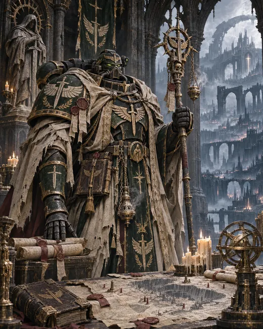
伊瑟林·灰烬行者阅读本卷原文 →
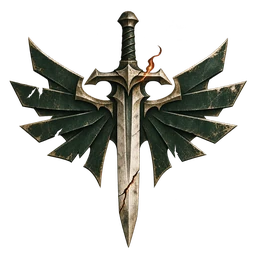
破碎余烬隐修会CENOBIUM OF THE SEVERED EMBER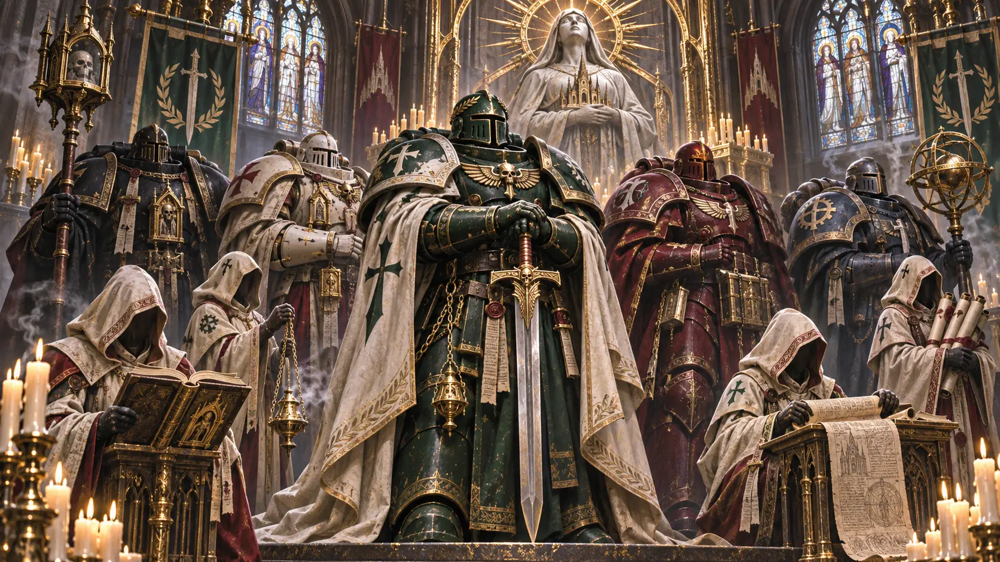
隐修会人物与个人命运
每幅都是独立生成的完整场景。点击图片查看原画，点击名字进入本卷人物条目。插画为编辑视觉呈现，不属于原始卷宗正文。

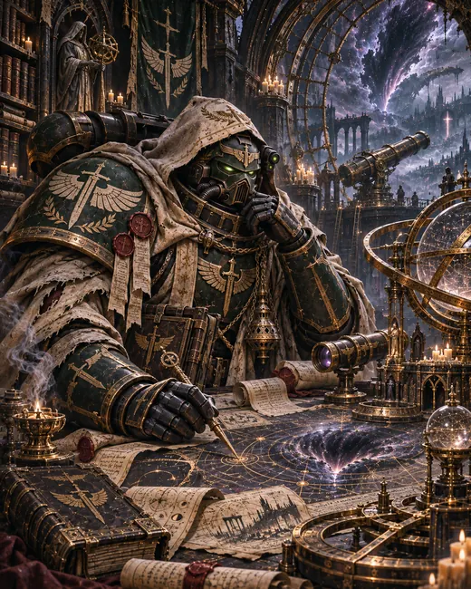
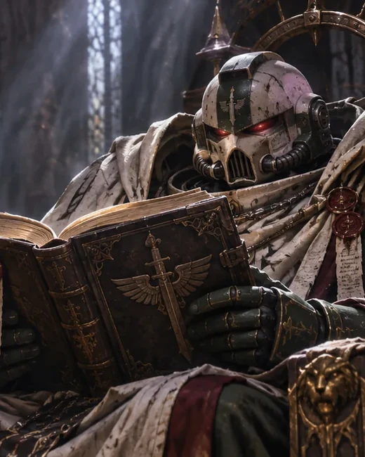
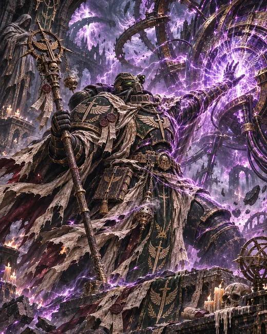
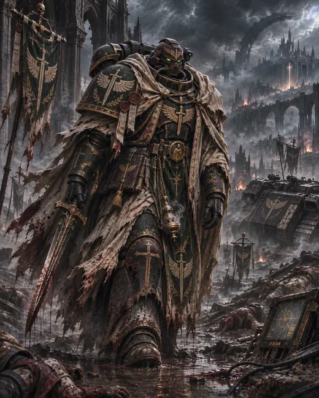
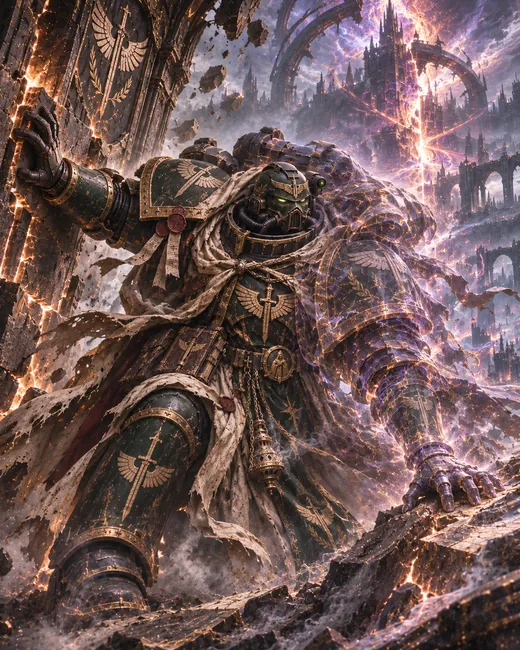
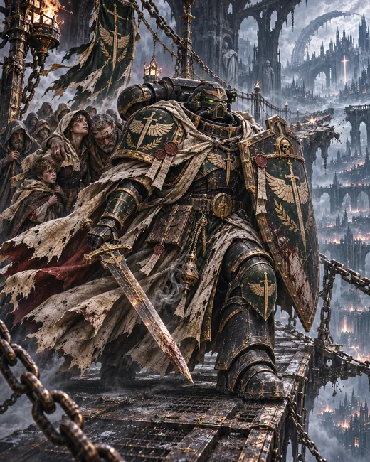
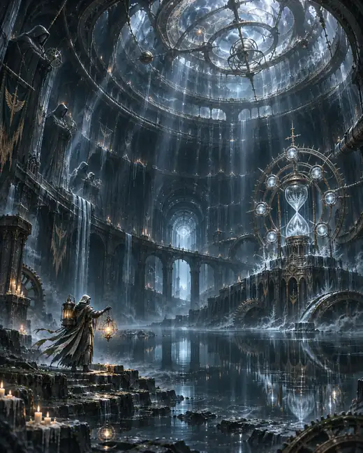
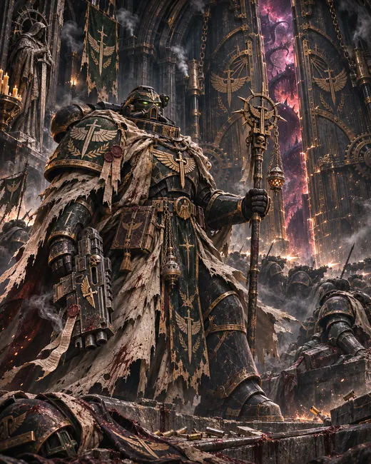
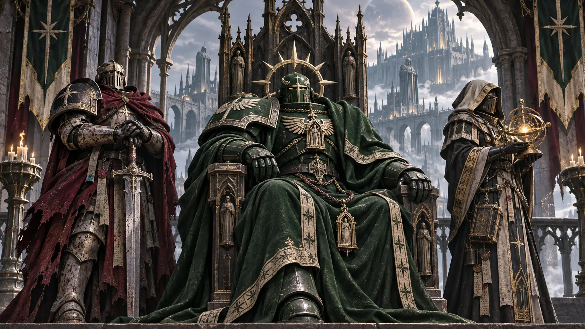
深渊之井战后的第十三天，远征名单被退回，整页盖着“暂缓”。一名余火守卫要求拆下自己的动力甲，为伤员修复另一套。遗迹铁匠把甲架推回原处。他们争执了很久，最后一起去搬运净水阀。
第一年，矿民用废墟钢梁为担架搭桥。风暴骑士拆下断裂的伪星支架，替换承重柱。河务员沿临时桥重新挂起水位尺，直到第一处取水口恢复，才有空回家。金穹外墙上留下了固定担架的孔洞；有人提议补平，修复队没有答应。
〔无名石廊·石匠阿登的账簿〕
阿登奉命修补一幅被烟熏黑的壁画。他发现墙上一个人物的手被后来者涂掉了，便按旧灰线补回。牧师奥瑞克看完，没有命他再擦去。第二天，阿登的工钱少了一半。账簿上没写是谁扣的。
谷物船队抵达边境矿港时，海盗快艇趁装卸闯入泊位。余烬号没有追击先撤走的敌舰；暗夜骑兵从货运平台侧翼冲散登舱的海盗，余火守卫夺回被抢占的货舱。待最后一艘谷物船重新点亮识别灯，旗舰才命令返航。货物没有损失，三个被掳走的轮机手也回来了。
余烬号下层餐厅的庆功时刻排在换班之后。厨师把热食留到第二轮；负责登记战果的战斗兄弟漏写了货船的名字，一名轮机手替他补上。两人争执了一会儿，直到最后一锅热食端来。
静滞地库的维修员曾说：“名字都在里面。有人醒来以后，不愿承认那还是自己的名字。”
567.M34。加勒隆将自身接入失控的力场回路。十三秒后，井口扩张停止。遗体未归。最后一句话是：“井口会吞掉一切。希芙拉。废星。我们。”
M42的监听簿里，十三秒的引力脉冲仍在。
799.M38。塞巴斯蒂安在第二次三伪星之战中守住抑制台九小时。两支小队的阵亡确认送到他手里时，他已无法读出姓名。此后他常坐在静滞地库入口，别人替他翻阅名单，他逐行点头或摇头。
熵火熔铸战役之后，雷金纳德的左半侧陷在一种不能稳定测量的“半相态”里。药剂师不得不保留那一侧变形的装甲，无法替他换上完整的新甲；他也不再承担近距突入。薪传议会为他刻录真名时，刻刀三次从胸甲上滑开。
他对此只说了一句话：“那就只刻右边。”
他的胸甲左侧刻痕尚未完成。有人试图补刻，他把刻刀收走了。
塞维林曾在裂隙边缘独处多日。归来后，他屡次护送堕天使俘虏返回希芙拉。075.M42井口守卫溃退时，他留下架起伤员桥，没有参加随后对克拉能的反击。追迹牧师以撒亚在旧案卷之外又添一项斥责：他选择了担架而不是追击。塞维林在两份斥责下方签名，没有答辩。
加弗里尔独自进入井口，归来时计时器停在第七分钟。他留下：“钟的两面都在看。”此后再未下井。
深渊大裂变期间渗漏从井口裂隙侵入修道院下层，直逼静滞地库。其自愿在回响走廊殿后，隔离闸门在第十九分钟关闭。科尔的通讯器在断线前传出了最后一句话：“我听到卡利班了。它说——我们回来了。”遗体未能回收。薪传议会将他的真名并列刻于同一块胸甲板，悬于初代者之墙。那块胸甲板至今仍会发出极低频的共鸣——频率与卡利班毁灭时散落的灵能碎片完全一致。
伊瑟林在《黑铁条约》中亲自领队，75.M42又守住希芙拉井口。两次战役之间，他曾拒绝一项看似轻易的命令：一支边境护航队请求隐修会借出两艘战舰清剿海盗，议会以暴露航线为由否决。他在命令上签字，三个月后才得知那条航路的货船全部遇袭。
〔伊瑟林的未寄信〕
船长的名字已经查明。收信人一栏没有填。
井口战后，他又签发了一次护航令。此次舰队成功护送谷物抵港。下层船员庆功时，伊瑟林没有出席；第二天，他命人将那艘货船的名字补进航志。
〔石廊封存页〕
两份草拟令仍在：寻访狮王；封锁井口。都未发出。
阿历克斯能够在井口附近工作，不需佩戴通常的抑制器。深渊之井战役中，他曾截断克拉能的传送。战后，议会要求他重新校准第一环区的仪器；他交回三份读数完全一致的表格，连误差栏也相同。
一名年轻测绘员私下问他，是否应当把其中两份销毁。阿历克斯说不必，随后让测绘员去食堂领晚餐。第二天，测绘员发现自己的岗位被调到地表。他一直不知道这是奖赏还是惩罚。
〔阿历克斯的观测簿〕
第三次校准后，仪器的指针仍在原位。换过仪器，结果相同。
奥瑞克原属赦免天使。他的小队在与钢铁勇士交战后覆灭，他被隐修会救出，声带再也不能正常发声。初到希芙拉时，他以金属片记录供词；旧渠人起初不肯进他的忏悔室，嫌那里像审讯间。
后来石匠阿登来求他批准修复一幅壁画。画上有一只被后来者涂掉的手。奥瑞克看完，让他补回。次日阿登的工钱少了一半。奥瑞克没有干预扣款，却从自己的供给额中拨出同等的粮票，送到阿登家里。阿登退了回来。
〔奥瑞克留在石廊的金属片〕
别让孩子把失色者叫作罪人。
奥瑞克没有署自己的名字。